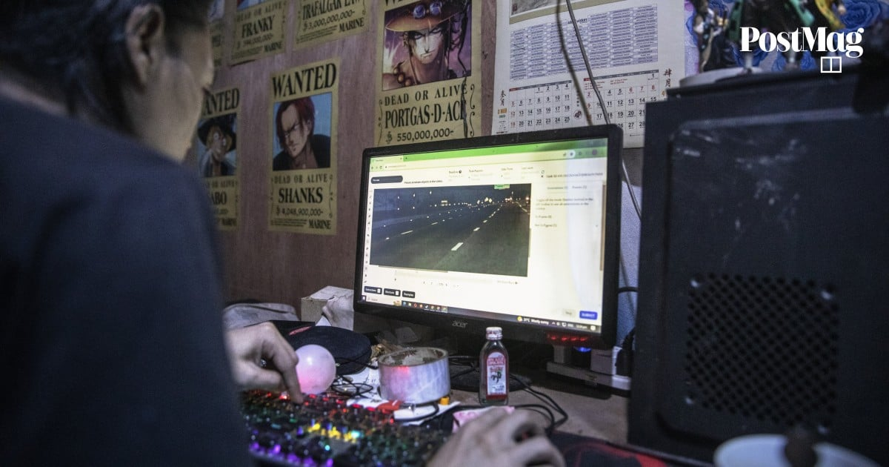
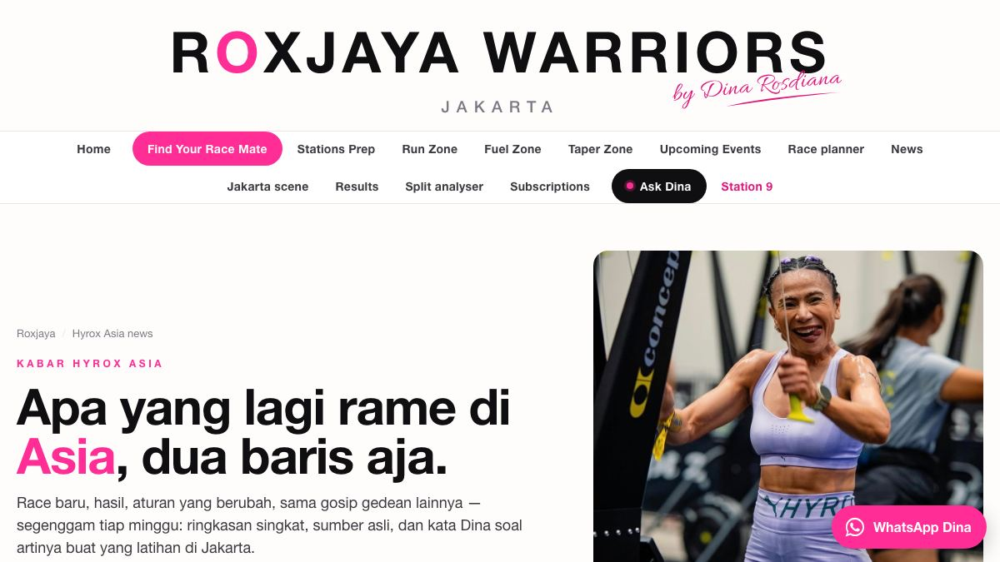
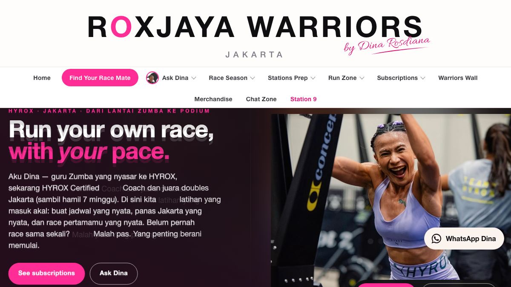
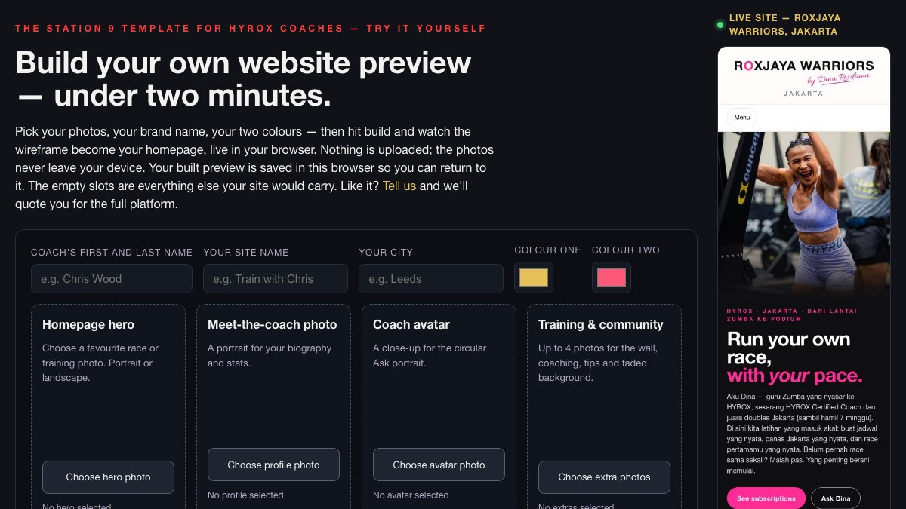
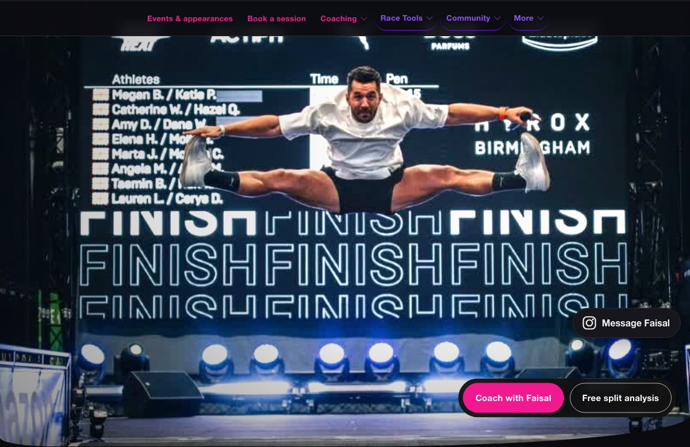

Chris Wood — portfolio
Collected for Soda's AI Content Engineer application, in three groups: the editorial track record, the voice engine already running on a real person, and the platform underneath it all. Everything below is live.
Six years as final editorial gate on a weekly magazine at 60M monthly uniques peak. Three features I commissioned, shaped and edited at Post Magazine, South China Morning Post — the brief was mine, the quality bar was mine.

How AI development fostered a digital "sweatshop"
Jan 2024. Commissioned after seeing the data-labelling industry reported as a tech story with no humans in it. The brief: find the people, follow the money, keep it readable.
Quantum computing could give AI the rocket fuel it needs
Aug 2023. The hardest kind of commission — a writer fluent enough to be trusted by physicists, an edit sharp enough that a general reader survives it. Both had to hold.
AI is rewriting the rules of creativity. What does that mean for human imagination?
Nov 2022 — weeks before ChatGPT launched. The brief was a hunch that generative AI was about to matter to everyone, not just the tech desk. It aged well.
This is the Soda job, already running on a real person. Roxjaya's coach doesn't write her news takes — the raw material is captured first: her captions, her messages, her conversations. From that, a voiceprint is derived — a spec detailed enough that the system publishes weekly commentary a stranger would mistake for her: her tone, her rhythm, her word choices, not a generic "casual Indonesian" register. Her regulars would read these and hear her — in a second language, because the voiceprint carries the voice, not the editor's fluency. The same pipeline carries the other half of the job: a recorded meeting, conversation or passing thought becomes a source-grounded brief, and one brief becomes a technical post, a webinar segment, a video script, a social thread or a customer story — each drafted in the voice that channel calls for.

Dina's takes, auto-published in her voice
Race-weekend commentary drafted by the system in her voice — voice sampling of her real captions and messages producing a voiceprint: her rhythm, her phrases, her register. Not translated copy, and not a generic "informal" setting — one specific person's informal speech, automated. Exactly what "make the founders sound like the founders" describes.
sample informal speech → derive voiceprint → system drafts → publish
voice sampling → voiceprint, automated
Roxjaya Warriors Jakarta
The platform the voice engine runs on — a working athlete-community site in use: coaching tools, race tools, results boards and community content for Jakarta's HYROX scene.
live platform, in useWhat the voice actually sounds like — with gloss
The voice carries the whole site — bio, nav, booking copy, race advice, news. Three examples: her own site copy, and two takes the system auto-publishes.
"Aku Dina — guru Zumba yang nyasar ke HYROX, sekarang HYROX Certified Coach dan juara doubles Jakarta (sambil hamil 7 minggu)."
"I'm Dina — a Zumba teacher who stumbled into HYROX, now a HYROX Certified Coach and Jakarta doubles champion (while seven weeks pregnant)."
Her actual bio, from the homepage. Nyasar — "stumbled into" — is her self-deprecation, and the thrown-in pregnant aside is exactly how she talks about herself. No style guide produces this; it came from how she writes.
"Udah dibilang kan — rekor Jakarta itu bukan kebetulan. Dua orang ini race kayak udah bertahun-tahun main di level ini; standar doubles Indonesia sekarang beneran level dunia. Sisanya tinggal ngejar."
"Told you — that Jakarta record was no fluke. These two race like they've been at this level for years; the Indonesian doubles standard is genuinely world-class now. Everyone else can chase."
An auto-published take. Udah dibilang kan — "told you, didn't I" — opens like her caption, and the rhythm is hers: short, punchy, talks like she coaches.
"1:01:49. Weekend panas, nggak ada bantuan apa-apa. Kalau lo latihan buat Singapore November — itu angka yang sekarang nempel di kulkas."
"1:01:49. A hot weekend, no help from anything. If you're training for Singapore in November — that's a number now stuck on the fridge."
Her opinion, her imagery. "A number stuck on the fridge" isn't a register setting — it's the kind of line she throws out; the system learned it from her, not from Indonesian.
Editorial judgement made reusable: what each page needs to say, how the voice should behave and where human approval belongs — built into content structures and workflows, not left in a prompt someone has to rewrite each time. Station 9 is the platform I’m developing through Arciteq Digital, using Claude Code, MCP servers and agent skills.

Station 9 — try the system
Add a coach’s name, colours and photographs, build a branded homepage, then explore the public race tools and The Desk. It demonstrates the content structures, page copy and workflows I’ve built alongside the interface: a repeatable system that produces a coach’s own site, not a software pitch. The builder assembles a configured template; Roxjaya, above, demonstrates the separate voice-sampling and automated publishing workflow.
interactive demo · browser-local photos
Faisal PMA
The most advanced build to date — a concept demo for a prospective coaching client, not a paying deployment. Included to show the ceiling: what the platform does when every feature is switched on.
concept build